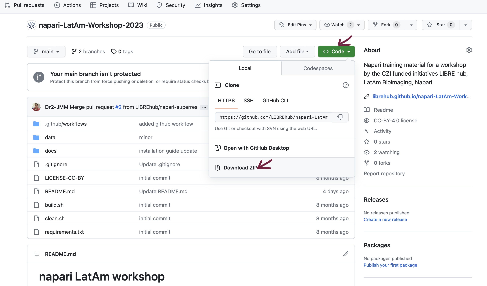
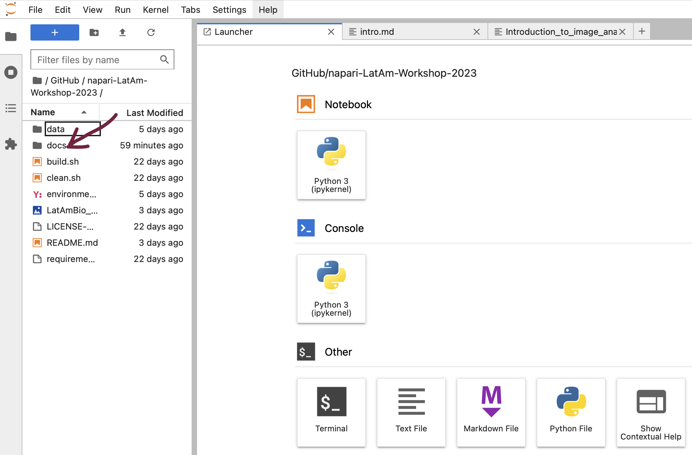
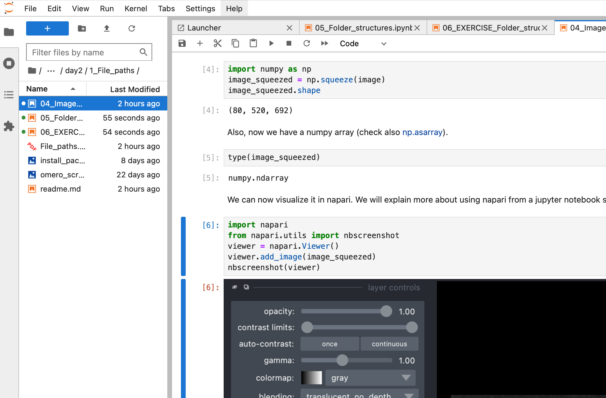

Image data science with Python and Napari @LatAm_Bioimaging#
🚧🚧🚧🚧🚧🚧
TODO:
update images
make timetable
update installation instructions depending on environment name
update accknoledgements
🚧🚧🚧🚧🚧🚧
This Jupyter book contains training resources for scientists who want to dive into image processing with Python. It specifically aims for students and scientists working with microscopy images in the life sciences. We presume the attendees have some basic programming and image analysis knowledge. To get everyone on the same level, we start with Python programming basics. We will process images using numpy, scipy, scikit-image, SimpleITK and clEsperanto. We will explore Napari for interactive image data analysis and the Napari-Assistant for generating Jupyter Notebooks from interactively designed image processing workflows.
Timetable#
How to use this material#
For following the course, we recommend downloading the repository from which this Jupyter book is made. All Jupyter Notebooks are executable so that attendees can reproduce all demos and exercises.

Assuming you downloaded the repository to your Desktop, you can open the Jupyter book by opening a terminal and typing:
cd Desktop/napari-LatAm-Workshop-2023
conda activate devbio-napari-env
jupyter lab
If you do not yet have conda or devbio-napari-env installed, first follow the “Course preparation” installation instructions on the next page.
Using Jupyter lab, you can navigate to the course lessons in the docs folder.

… and execute the code and experiment with it. 
Feedback and support#
If you have any questions, please create a github issue. Alternatively, open a thread on image.sc.
Acknowledgements#
This course was held virtually at the IIBM, Universidad Católica de Chile in August 2023 as part of the LIBRE hub project. We would like to thank all online contributors and speakers for their support and CZI financial support through the LIBRE hub project. We would like to thank all the people who shared teaching materials we are reusing here, in particular from an EPFL copurse last year.